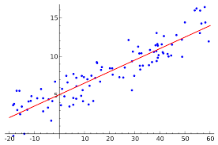
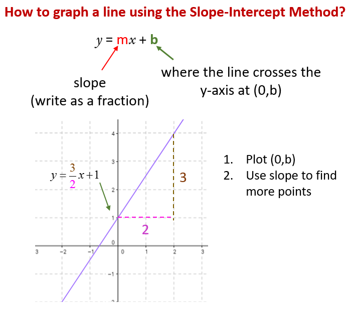
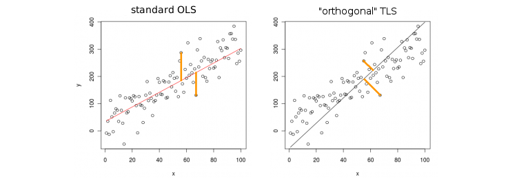
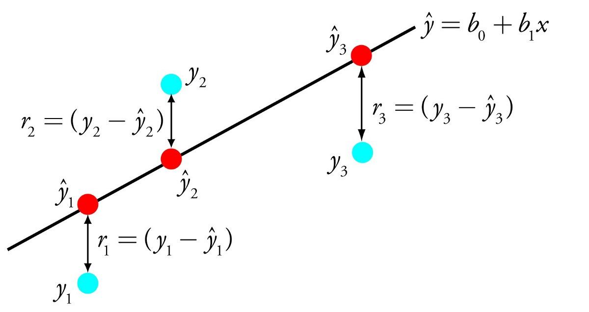
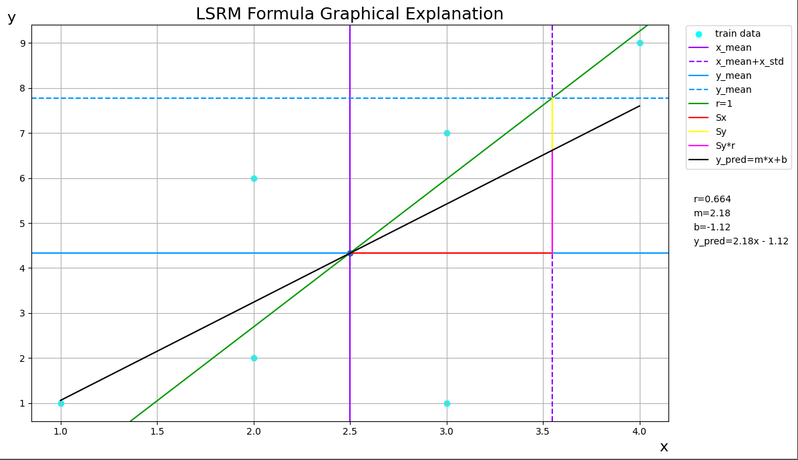
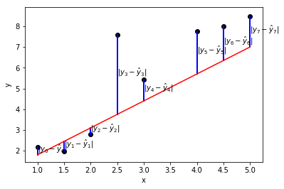
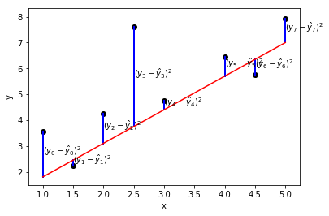

Keyboard shortcuts:
N/СпейсNext Slide
PPrevious Slide
OSlides Overview
ctrl+left clickZoom Element
If you want print version => add '
?print-pdf' at the end of slides URL (remove '#' fragment) and then print.
Like: https://wwwcourses.github.io/...CourseIntro.html?print-pdf
Linear models for regression
Created for

Iva E. Popova, 2024,

Regression Models in Machine Learning.
Overview
- Regression analysis is a form of predictive modeling technique which investigates the relationship between a dependent (target) $y$ and independent (predictor) variables $X$.
- I.e. it fits a line (or curve) to the data points, such that the differences between the distances of data points from the line/curve is minimized.
$$ {g:X\to y} $$
Types of regression techniques
We classify them by
- Number of independent variables
- Simple Regression
- Multiple Regression
- Shape of the regression line
- Linear Regression
- Non-linear regression (like Polynomial regression)
- The type of the dependent variable (continuous or binary(categorical))
- Linear regression
- Logistic regression
Why the Term "Regression"
- According to Conspiracy Theories:
- Blame ICSSNN (The International Committee for Sadistic Statistical Nomenclature and Numerophobia) 😉
- Reference: So Why Is It Called "Regression," Anyway?
- The Reality:
- The term "regression" was first used by Francis Galton in 1886. He used this concept to explain how children of exceptionally tall or short parents tended to be closer to the average height of the population rather than extreme, thus "regressing" towards the mean.
- Galton, F. "Regression towards Mediocrity in Hereditary Stature.", 1886
Linear Regression
Linear Regression
Overview
- Linear regression is used to model and predict continuous outcomes.
- It's a predictive model to predict future values $Y$ of $X_i$, using a linear equation
- It is based on the idea of finding a line that best fits the data, so that we can make predictions for new data points. 
- Do not confuse it with logistic regression, which is used to model binary outcomes (i.e. it concerns classification tasks)
{kind=link}
Formal definition
- Linear Regression is a method to model the relationship between a set of independent variables $X$ (also known as features) and a dependent variable $y$.
- This method assumes the relationship between each feature $X$ is linearly related to the dependent variable $y$.
$$ y = \beta_0 + \beta_1 X + \epsilon$$
- where $\epsilon$ is considered as an unobservable random variable that adds noise to the linear relationship.
- $\beta_0$ is the intercept of the linear model
- $\beta 1$ is the co-efficient of the model (the slope of the line)
- This is the simplest form of linear regression (i.e. with one variable).
Slope-intercept form
- Slope-intercept form is a way to write the equation of a line, following this structure:
${y=mx+b}$ - In this equation, slope=$m$, intercept=$b$
- Note that in statistics, the notation is: slope=$\beta_1$, intercept=$\beta_0$, or $y={\beta_1}x+\beta_0$
- The slope indicates the steepness of the line and is calculated as the change in y divided by the change in x (rise over run)
- The y-intercept is the point where the line crosses the y-axis. It is the ordered pair (x=0,y=b).
- For example, the line ${y=3/2x+1}$ has a slope of ${3/2}$ and a y-intercept of 1. That line is graphed below. 
{kind=link}
PLot Slope-Intercept Form of a Line
import numpy as np
import matplotlib.pyplot as plt
# Define the slope (m) and intercept (b)
m = 3/2
b = 1
# Generate x values
X = np.linspace(-10, 10, 100)
# Calculate y values based on the slope-intercept form
Y = m * X + b
# Plot the line
plt.plot(X, Y, label=f'y = {m}x + {b}')
# Plot auxiliary lines
plt.axhline(0, color='black',linewidth=0.5)
plt.axvline(0, color='black',linewidth=0.5)
plt.axhline(b, color='red', linestyle='--', linewidth=1)
plt.axvline(m, color='green', linestyle='--',linewidth=1)
plt.grid(color = 'gray', linestyle = '--', linewidth = 0.5)
plt.title('Slope-Intercept Form of a Line')
plt.xlabel('x')
plt.ylabel('y')
plt.legend()
# normalize ticks
plt.xticks(np.arange(-5, 6, 1))
plt.yticks(np.arange(-10, 15, 1))
plt.xlim(-5,5)
plt.ylim(-10,10)
plt.show()
The general prediction formula for a linear model
- $ X_1 ... X_p$ are the $p$ features used in the model
- The estimated values are represented with a "hat" on top of the letter
- $\hat{\beta}_0 ... \hat{\beta}_p$ are the model parameters that are learned.
- $\hat{\beta_0}$ is the intercept of the linear model
- $\hat{\beta_1} ... \hat{\beta_p}$ are the co-efficients of the model
- $\hat{y}$ is the prediction that model makes
- Once you estimate the parameters $\hat{\beta}_0$ ... $\hat{\beta}_p$, you can use these to predict new values of $Y$
From: $ y = \beta_0 + \beta_1 X_1 + \ldots + \beta_p X_p + \epsilon $
Find: $ \hat{y} = \hat{\beta}_0 + \hat{\beta}_1 X_1 + \ldots + \hat{\beta}_p X_p $
Simple vs Multiple Linear Regression
- When $p$ = 1, we have the equation for a line.
- Simple Linear Regression
- When $p$ >= 2, we have the equation for plane/hyperplane
- Multiple linear regression
$ \hat{y} = \hat{\beta}_0 + \hat{\beta}_1 X_1 + \ldots + \hat{\beta}_p X_p $
Estimate the coefficients (fit the model)
- Find the best fitting straight line through a set of points
- How do we calculate the error (also known as the residual) - the difference between the observed value and the predicted value?
- Two main ways: Standard Least Squares (discussed next) or Orthogonal Distance (presented in the picture) 
{kind=link}
Least Squares Regression Method
Least Squares Regression Method
Overview
- Least Squares regression is a method to find the least-squares regression line (i.e. the line of best fit) for a set of data. That line should minimizes the sum of the residuals, or errors, squared.
- Finding the best estimates of the coefficients is often called “fitting” the model to the data, or sometimes “learning” or “training” the model.
- The Least Squares Method estimates $\beta_0$ and $\beta_1$, that minimize the sum of the squared residuals $r_i = y_i - (\beta_0 + \beta_1 x_i)$ in the model. I.e. it makes the difference between the observed $y_i$ and linear model $\beta_0 + \beta_1 x_i$ as small as possible.
- where $N$ is the number of observations.
- The above given formula is for simple regression. For multiple regression the formula is:

{kind=link}
$$ S = \sum_{i=1}^N r_i^2 = \sum_{i=1}^N (y_i - (\beta_0 + \beta_1 x_i))^2 $$
$$\sum_{i=1}^N r_i^2 = \sum_{i=1}^N (y_i - (\beta_{0} + \beta_{1} x_{1,i} + \beta_{2} x_{2,i} + \cdots + \beta_{k} x_{k,i}))^2.$$
Calculus
- To calculate the line coefficients for regression line ($\hat{y}=mx+b$) we make the assumption that the line will pass through the point ($\bar{x},\bar{y}$), and we can use:
1. $m=r.\frac{S_y}{S_x}$,
2. $b=\bar{y}-\bar{x}m$,
where $r$ is the correlation coefficient of the dataset, and $S_x$, $S_y$ is the sample standard deviation of x and y - Explanation: 
{kind=link}
LSRM Calculation - Hands on
- The steps and explanations are given in next Jupyter Notebook: LSRM_DeepExplanations.ipynb
Linear Regression with Gradient Descent
Linear Regression with Gradient Descent
Gradient Descent - Overview
- Gradient Descent is an optimization algorithm used to minimize the cost function in linear regression.
- It iteratively adjusts the parameters to find the minimum cost.
- Self-learning: Gradient Descent Algorithm — a deep dive
{kind=link}
Algorithm
- Algorithm
- Initialize the parameters (β0, β1, ... , βn) with random values.
- Compute the cost function.
- Compute the gradient of the cost function with respect to each parameter.
- Update the parameters using the gradient.
- Repeat steps 2-4 until convergence or for a fixed number of iterations.
Implementation in Python
- Here is a simple implementation of linear regression using gradient descent in Python.
import numpy as np
import matplotlib.pyplot as plt
# Generate some data
np.random.seed(0)
X = 2 * np.random.rand(100, 1)
y = 4 + 3 * X + np.random.randn(100, 1)
# Add x0 = 1 to each instance
X_b = np.c_[np.ones((100, 1)), X]
# Initialize beta
beta_initial = np.random.randn(2,1)
# Set hyperparameters
learning_rate = 0.1
iterations = 1000
# Perform gradient descent
beta, cost_history = gradient_descent(X_b, y, beta_initial, learning_rate, iterations)
# Plot cost history
plt.plot(range(iterations), cost_history)
plt.xlabel('Iterations')
plt.ylabel('Cost')
plt.title('Cost Function')
plt.show()
print(f"Optimized parameters: {beta}")
Gradient Descent vs. Least Squares Regression Method
Gradient Descent vs. Least Squares Regression Method
Differences
- Gradient Descent
-
- Iterative optimization algorithm.
- Can handle large datasets and high-dimensional data.
- Requires tuning of hyperparameters (learning rate, number of iterations).
- Can be computationally expensive for very large datasets.
- Least Squares Regression Method (LSRM)
-
- Analytical solution to linear regression.
- Computes parameters in a single step using matrix operations.
- More efficient for smaller datasets.
- Can be impractical for very large datasets due to matrix inversion.
Use Cases
- Gradient Descent
-
- When dealing with very large datasets where matrix operations are computationally expensive.
- When working with streaming data or online learning scenarios.
- When the data is sparse or has many features.
- Least Squares Regression Method (LSRM)
-
- When the dataset is relatively small and can fit into memory.
- When a quick and exact solution is needed without iterative optimization.
- For educational purposes to understand the basic principles of linear regression.
Regression Metrics
Regression Metrics
Mean Absolute Error
- Mean Absolute Error (MAE) is is the mean of the absolute value of the errors
- Mean Absolute Error (MAE) is the average vertical/horizontal distance between each point and the identity line. 
$$\frac 1n\sum_{i=1}^n|y_i-\hat{y}_i|$$
Mean Squared Error
- Mean Squared Error (MSE) is the mean of the squared errors:
- Because of this squaring, MSE is particularly sensitive to outliers (i.e. it "punishes" larger errors). -
${MSE} ={\frac {1}{n}}\sum _{i=1}^{n}(Y_{i}-{\hat {Y_{i}}})^{2} $
When to Use MSE
- During Model Training: MSE is commonly used as a loss function for training models. Its mathematical properties make it well-suited for optimization algorithms like gradient descent.
- Theoretical Analysis: When performing theoretical analysis or deriving properties of estimators, MSE is often preferred because it simplifies the mathematics.
- Comparing Model Variance: When you are more concerned about the variance of the errors and want to give more weight to larger errors.
Root Mean Squared Error
- Root Mean Squared Error (RMSE) is the square root of the mean of the squared errors ($RMSE=\sqrt{MSE}$):
- RMSE is interpretable in the "y" units.
$$\sqrt{\frac 1n\sum_{i=1}^n(y_i-\hat{y}_i)^2}$$
When to Use RMSE
- Interpretability: When the interpretability of the error metric is important, RMSE is preferred because it is in the same units as the target variable. This makes it easier to understand and communicate the magnitude of the errors.
- Practical Applications: In practical applications where stakeholders need to understand the model's performance in real-world terms (e.g., dollars, meters, degrees), RMSE is more intuitive.
- Model Comparison: When comparing different models, RMSE can provide a clearer picture of which model performs better in terms of the actual scale of the errors
R-squared (Coefficient of Determination)
- R-squared, also known as the coefficient of determination, is a statistical measure that represents the proportion of the variance in the dependent variable that is predictable from the independent variables.
- R-squared values range from 0 to 1.
- An R-squared of 1 indicates that the regression predictions perfectly fit the data.
- An R-squared of 0 indicates that the model does not explain any of the variability in the response data around its mean.
- For example, if an R-squared value of 0.85 is obtained, it means that 85% of the variability in the dependent variable can be explained by the model. The remaining 15% of the variability is due to other factors not included in the model.
$$R^2 = 1 - \frac{\sum_{i=1}^n (y_i - \hat{y}_i)^2}{\sum_{i=1}^n (y_i - \bar{y})^2}$$
Use Case
- R-squared is useful for understanding the explanatory power of the regression model.
- It tells you how much of the variance in the dependent variable can be explained by the independent variables.
- However, R-squared alone does not indicate whether the model predictions are biased or not. It is often used in conjunction with other metrics such as MAE or RMSE.
- A high R-squared value does not necessarily mean a better model. It does not account for overfitting.
- By examining the R-squared value, you can gain insight into how well your independent variables explain the variability of the dependent variable in your regression model.
Examples
Scikit-learn Demos
Scikit-learn Demos
- Simple Linear Regression
- Simple linear regression
- Advertising && Sales Prediction
- Linear Regression Example: Ads Spend